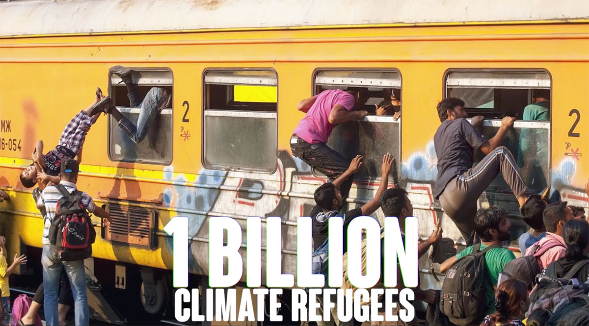

TELL THE TRUTH
Check latest stuff on Google Doc

I knew about feedback loops:
- white polar caps melting, dark ocean waters absorbing heat
- permanent frost melting releasing natural gas
- ocean acidification
But this is something new, unprecedented:
Message to China: stop alfalfa imports: https://t.co/uAqyJveSNx
— genesis.re going to #cccamp19 (@genesisdotre) August 4, 2019
Message to Russia: containment (100m buffer to avoid spreading fire): https://t.co/W8lbNC1r9H
Message to the US: climate change is for real @POTUS @realDonaldTrump
Message to the media: #tellthetruth @ExtinctionR
Don't you see how fragile it is?
Fire in the arctic?
What the fuck?
Do you really think 1.5°C is possible?
Beyond a certain point, it's runaway climate change and we are all fucked.
1.5°C is like trying to predict that Bitcoin price will be $15k seven years from now (it's either Moon or Zero), fly a jet at 50 miles per hour, or balance a bicycle without any speed.
Stillframe from "THE TRUTH HAS CHANGED", currently crowdfunding on Kickstarter: